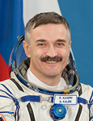

Lyndon B. Johnson Space Center
Houston, Texas 77058
|
National Aeronautics and Space Administration Lyndon B. Johnson Space Center Houston, Texas 77058 |
 |
Biographical Data |
||
Kaleri Alexander Yurievich
soyuz tma commander
iss flight engineer
rsc energia instructor-test-cosmonaut, 1st class
73rd russian cosmonaut, 265th world cosmonaut
PERSONAL DATA: Born May 13, 1956, in Yurmala, Latvia. Married to Svetlana Leonidovna Kaleri (Nosova). They have one son, Oleg, born in 1996. His hobbies include collecting stamps and space logos, sports, history of cosmonautics and promotion of space. He also enjoys reading, jogging and gardening.
EDUCATION: After graduating from high school #5 in Yurmala in 1973, he entered the Moscow Institute of Physics and Technology. He graduated in 1979 with a bachelor degree in flight dynamics. In 1983 he completed postgraduate work at the same Institute with specialization in liquids, gas and plasma’s mechanics.
AWARDS: Hero of the Russian Federation (1992), Orders of Services to the Fatherland of 2nd and 3rd class, Order of Friendship, Légion d'honneur (France), NASA Space Flight and Public Service medals.
EXPERIENCE: After graduating from the Institute he worked at the Russian Space Corporation Energia from September, 1979 until April 1984 as an engineer researching aerodynamic loads. He participated in the “Astra” experiment for the Salyut-7 space station. Studied aerodynamics of the Energia launch vehicle first stage launchers from separation to parachuting. Participated in developing design and technical documentation of the Mir orbital station. He has logged 22 flight hours piloting the L-39 training aircraft. Performed 14 parachute jumps.
SPACEFLIGHT TRAINING: In April 1984, he was qualified as an RSC Energia cosmonaut candidate. From November 1985 to October 1986, Kaleri completed basic space training at the Gagarin Cosmonaut Training Center. After successfully passing the exams, he received qualification of a test-cosmonaut.
From April 1987 to May 1991, Kaleri trained as a Soyuz TM flight engineer on Mir-3, 8 and 9 backup crews. From May to July 1991 Kaleri trained as the flight engineer of Soyuz TM-13 mission for Expedition -10/Astromir on the Mir station.
From October 1991 to March 1992, he trained as a prime flight engineer for the Soyuz TM-14 crew for the Mir-11 mission. From September 1995 to August 1996 he trained as a back flight engineer on the Soyuz TM-24 (Mir-22/NASA-3) mission. A few days prior to the mission the backup crew was assigned as the prime crew for the mission.
From December 1997 to July 1998, Kaleri trained as a backup flight engineer on the Mir-26 mission. From March 1999 to March 2000 he trained as a flight engineer on the Mir-28 prime mission.
From January 2001 to May 2002, Kaleri trained as a backup commander on ISS-5. From September 2002 to February 2003 he trained as an ISS-7 backup engineer for a shuttle launch.
From February to April 2003, Kaleri trained as an ISS-7 backup engineer, as Soyuz TMA commander, and ISS flight engineer. From June to October 2003 he trained for the ISS-8 mission as Soyuz-TMA-3 commander and ISS flight engineer.
SPACEFLIGHT EXPERIENCE: Kaleri performed his first spaceflight from March 17 to August 10, 1992 as Soyuz TM-14 flight engineer and Mir flight engineer of the Mir-11 prime mission, Russian-German Mir-92 mission and Russian-French “Antares” program. During the flight the crew performed ecological filming per the UN program, technological experiments on monocrystal growth of different composition as well as operations in the “X-ray” observatory. Kaleri performed one EVA that lasted 2 hours and 3 minutes. The mission duration was 145 days.
Kaleri performed his second spaceflight from August 17, 1996 to March 2, 1997 on the Soyuz TM-24 vehicle and the Mir station as the Mir-22 flight engineer, Russian-American “Mir-22/NASA-3” and Russian-French “Cassiopeia” program. During this mission an autonomous flight of the cargo vehicle was performed for the first time with follow-up return to the station. Besides, the work of the Expedition 22 crew was really sensational– wheat spikes appeared in the Svet greenhouse for the first time. Kaleri logged over 12 hours and 36 minutes of EVA in 2 spacewalks and another 197 days in space.
On his third space mission from April 3 to June 16, 2000, Kaleri participated as Mir-28 flight engineer. During the experiments “Plasma Crystal-2” the crew managed to get consistent organized spatial structures for the first time in weightlessness. Mir-28 was the last Mir mission. Kaleri logged 5 EVA hours in one spacewalk. The mission duration was 73 days.
On his fourth spaceflight on ISS Expedition 8 from October 18, 2003 to April 30, 2004, Kaleri served as Flight Engineer aboard the International Space Station. Mission duration was 195 days and included one EVA of 3 hours and 56 minute duration.
Kaleri served as commander aboard the Soyuz TMA-M when it launched October 7, 2010 to the International Space Station. During his 5-month stay aboard the station, Kaleri served as a flight engineer for Expedition 25/26.
A veteran of five spaceflights, Kaleri has logged more than 770 days in space including 23 hours and 38 minutes of EVA time in spacewalks.
MARCH 2011